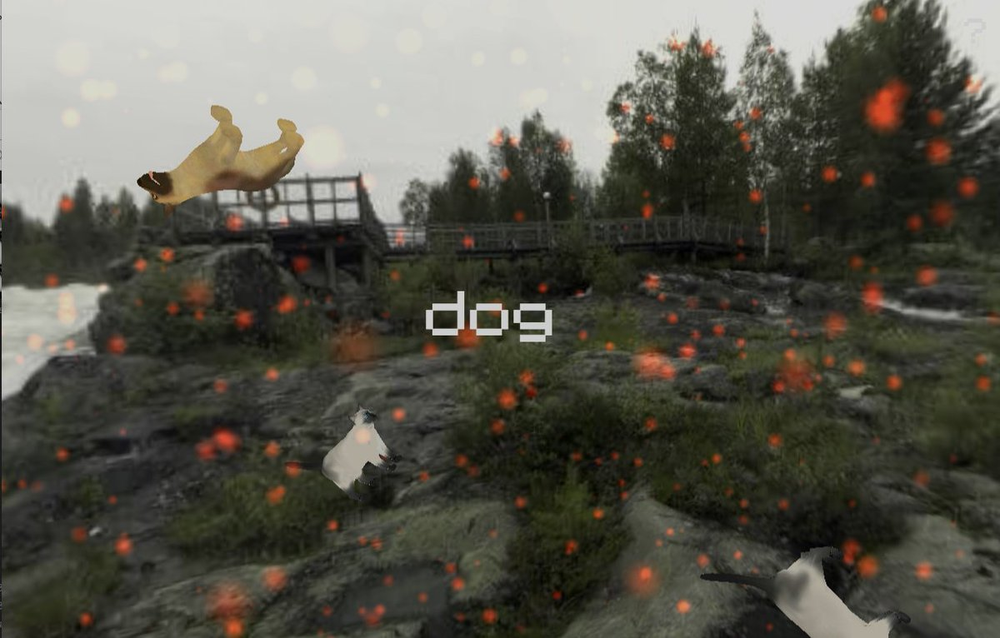

SITIOS
Sitios de interés para científicos toxicomanos psiconautas.
Deep Dream Generator
Generador de imágenes oníricas, Feb 3, 2019
Deep Dream es un algoritmo de procesamiento de imágenes creado por Google, que se basa en la enseñanza a sus computadoras en cuanto a la forma de ver, entender y apreciar nuestro mundo. Además, el algoritmo está formado por una red neuronal artificial, que fue entrenada mostrandole millones de imágenes como ejemplo, para así ajustar poco a poco los parámetros de la red neuronal hasta obtener la identificación de la imagen y clasificarla de la manera adecuada.
En este programa de Inteligencia Artificial se originan ideas oníricas de Google, clasificando imágenes con solo "mirarlas" , para así reproducirlas o mejorarlas sobre la base de patrones formados durante el aprendizaje/entrenamiento. Muchas de las imágenes editadas muestran ojos de animales y sus caras, ya que es lo que el software ha sido entrenado para ver y reconocer.
Las redes neuronales comprenden un sistema de procesamiento de información que simula el funcionamiento del sistema nervioso, mediante el uso de neuronas artificiales que aprenden y procesan información, modelando un problema matemáticamente por medio de algoritmos, para entregar una solución. Se les da el nombre de redes neuronales porque imitan de forma sencilla el sistema que tienen las neuronas de nuestro cerebro de procesar información.
Deep Dream Generator invita a jugar un poco con este algoritmo, permitiendole al usuario generar sus propias imágenes oníricas al entrenar el sistema con una imágenes y haciendolo interpretar otra diferente.
Constellation
Juego de creatividad, Feb 3, 2019
En este juego se nos da un espacio vacio el cual se puede llenar con escenarios y elementos que vienen de la impaginación del jugador. No es tan completo como para contener todos los objetos que uno pensaría, pero puede brindar unos buenos minutos de entretenimiento.
Para que haya una idea, aca hay algunos ejemplos de comandos que sirven,
- dog
- dogs
- moon
- heaven
- music
- spin
- fast
- vaporwave
La lista continúa, el resto hay que descubrirlos.
Constellation demanda creatividad y la limita con contados comandos, dejando así cualquier escenario en manos del jugador.
El autor

Formación en astronomía y física computacional con gusto musical variado. Fan del humor negro, la juventud en decadencia y opositor de la censura.
Twitter feed
Tweets by un_genio_masFollow Me